JS13kGames 2019
august-september 2019
Intro
Hi! This is a WIP article!
Before the compo
Ideas list
Since last JS13kGames, while waiting for the theme, I prepared a list of ideas that looked like this:
Tools
I also made some tools, such as:
- this online ES6 minifier (optimized for js1k/js13k extreme compression),
- this pixel-art editor (with tiny JS export),
- this CSS3D framework (that helps making CSS3D scenes super easily),
- this music partition editor (wip, with the great help of @d_gnhia),
- this mini 2D physics engine (that I submitted during JS1K 2019).
- this multi-instrument music editor (based on MiniMusic, but with many more options, also thanks to @d_nghia).
Fun fact: @udxs made a meme about me and all the tools I've made:
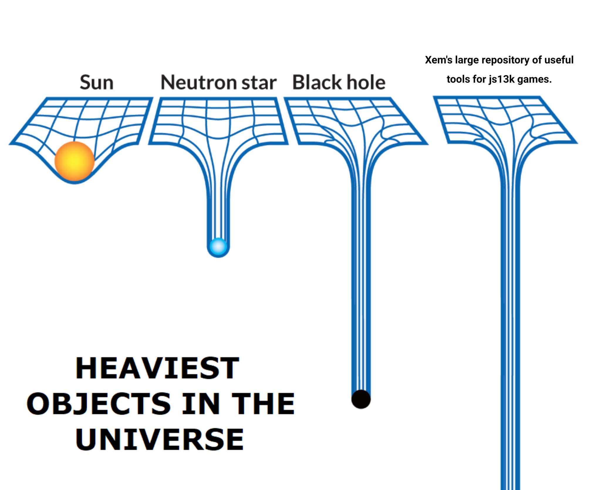
It's a running gag since:
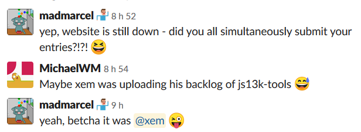
These tools are now present in the resource page of JS13k, along with 24 others tools I had made since 2015.
@end3r, who organizes JS13k every year, even mentioned my contribution in his "HELP PROMOTE JS13K" blog post! Thanks to him!
During all the month of the compo, I've seen a lot of people thanking me on Slack and on Twitter for my sound, art and compression tools, and telling me they're happily using them.
I'm so glad I could help them make their games look and sound better through my tools! <3
Storyteller?
I was VERY interested in the first idea of the list: a comics puzzle game inspired by the indie game Storyteller.
For a better idea of the concept, take a look at this video:
I made a mini drag&drop library, just in case I'd make this game for JS13k19.
I also started coding a mini game engine prototype with emoji, because I was too curious to discover how such a system could be implemented.

It was actually easier than I thought: the engine basically needs to know the characters' characteristics and emotions in a given frame (and sometimes the previous frame) and a list of hardcoded rules to determine the outcome of the current frame.
Based on the video above, I was able to write a list of 44 rules (without implementing them).
Most of them consist of a single, easy test.
For example, "if someone is close to a treasure: he/she becomes rich; If someone else is closer to the treasure in the next frame: he/she stole the treasure to the other person and the other person hates him/her").
The most important rule of the game (and the most complex one) is the one that make two people become lovers. This can happen:
- if both are alive;
- if both of them are the same species (human or vampire);
- if both are close physically (if two women are present in the scene, a man will love the closest one, and vice versa);
- if both are single (or not loyal to their lover);
- if both are straight and of different sex, or gay and same sex, or bi;
- if they're of the same social status (both poor, or both rich, or a princess and a hero);
- if none of them is mourning a lover dead at the previous frame;
- if none of them is heartbroken;
- if none of them is angry at the other;
- if none of them is shocked by a crime made by the other;
- if none of them is greedy and close to a treasure;
- if none of them is an Old Mentor (single for life);
- if none of them is a human near to a vampire (because vampires make every human ar fall in love with them).
This can seem complicated, but with the right data structures, it's just a matter of "if" tests performed in the right order.
In the end, I did not make this game for JS13k19, but I had a lot of fun figuring out how it worked. And I'm also glad I could develop MiniDragAndDrop while preparing it.
Week 1
The theme
Day 1: The theme "BACK", was very inspiring, even though it seemed very similar to a previous theme called "REVERSE"...
Fun fact: I spent all the previous year saying to @end3r that the theme of next JS13k should be "BACKSEAT", in reference to Notch's answer when I pointed at some optimizations he could add in his code last year.
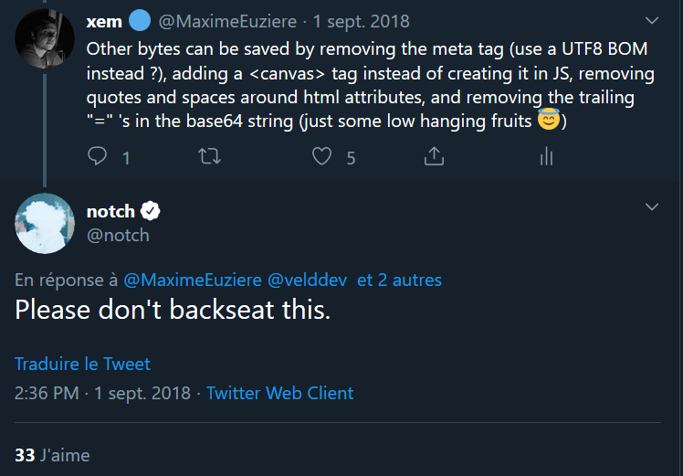
A few minutes before the start of the compo, @end3r pushed the joke a bit further by hinting this:
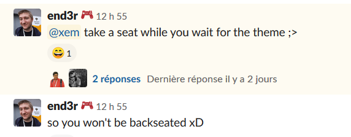
Ideas
I started scribbling some ideas on my notepad:
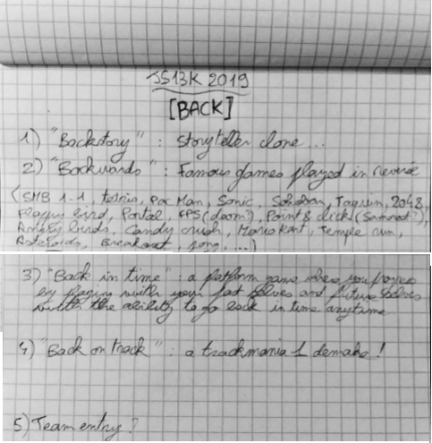
Three ideas from my list could easily be adapted to this theme:
- The Storyteller clone (a.k.a. "Backstory", because you have to change the comic's events to match a story's conclusion)
- The Trackmania Original demake (a.k.a. "Back on track", because it revives an old game and some of its puzzles actually require to go backward on the track to win)
- The Mario 64 demake (because replaying it today would be a long jump back in time)
Other ideas directly inspired by the theme also included:
- "Backward": a collection of iconic video games levels that you have to play from the end to the start, with a completely inverted goal (for example, in Backwards Mario, you start from the flag and go througs the course from right to left. In backwards Pac-Man, you need to fill the area with gums. Etc!)
- "Back in time": a platform game where you have the ability to go back in time, and use your past/future selves to pass obstacles.
Choosing an idea...
My choice was finally to do something like Trackmania.
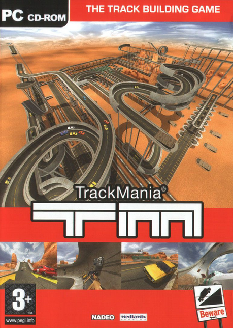
Adios, other ideas!
- Storyteller's author (who was okay to let me make a game inspired by his concept) told me that his game is close to an official release, so I didn't want to "steal" his level ideas...
- The Mario 64 demake would be so much work, and I won't have enough free time to do it well in one month...
- The game compiling famous levels played backwards may infrige a lot of copyrights, even if I alter the graphics and audio, and moreover, I'm not sure at all if it would be fun to play...
- The Back in time platformer would be cool, but it may be redundant with a lot of time travel entries made this year, and with my 2016 game Super Chrono Portal Maker which also used this mechanic a lot...
Why Trackmania then?
- With this theme, and this "backseat" joke behind it, i HAD to make a racing game!
- I thought "what's my favourite racing game?" and the obvious answer was Trackmania.
- Trackmania (from 2003), a.k.a. Trackmania Original (the 2005 remake), is one of my favourite games, and it's almost impossible to install it on a modern PC: It's not available on Steam/GoG/Epic, and even if you buy the CD of the game (like I did), you're forced to crack it in order to play on Windows 8 or 10.
- I have almost no idea how to implement it, even less in 13kb, and it's the kind of challenge I'm looking for.
So I decided that a demake of this game would not only be a great programming and compression challenge, and a new type of game for me (racing), but also a good way for everyone to enjoy the good parts of this rare game 16 years after its release!
Choosing a game name
When I wrote this idea in my list, I thought "13Kmania" would be a good name. (Especially in french, where "treize K mania" sounds a lot like "Trackmania".
But to be more theme-friendly, I decided to use "Back on Track" instead!
Specs
Day 2. Since my entry is a hommage to an abandonware (eh, it's even downloadable on archive.org for free!), I won't try to be super original, but instead, make a game that feels like the real one, with the same puzzles and races, just a lot simpler visually.
It'll still be a huge task for me because I'll have to make vehicles, dozens of connectable road blocks, a map editor, and a convincing racing simulation in 13kb, in 3D, and in 31 days. 😰
By the way: this project will have zero planning. I'll code what I want everyday and we'll see where it goes! (this is probably an extra challenge, but it might be fun at least)
Technology
I know 3 ways to do 3D in a mini game: CSS3D, vanilla WebGL (with raymarching), and points projection.
I first tried to go with point projection to try to make a game that is less resource-intensive. Unfortunately, I got stuck very early, when I tried to draw a (road) polygon that moved behind the camera. At this moment, the projection becomes erratic and I have no idea how to fix it...
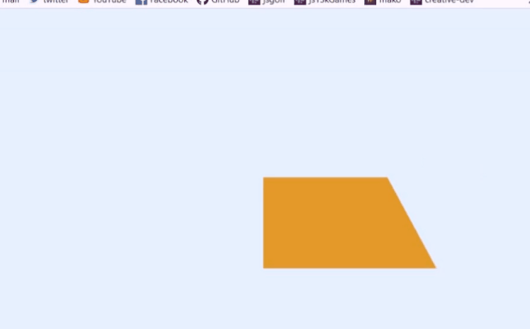
(this gif shows my attempts to make a square that goes from front to back under the camera, in perspective. As soon as the distance between a point and the camera is negative, I have no way to project my polygons reliably)
WebGL would look very nice but I'm afraid I'll lose too much time trying to make it work.
So, let's go with CSS3D, and this time, with the help of my mini framework that hides most of the complexity!
Space will be tight, so I removed everything I didn't need from my framework (set_unit(), set_perspective(), pyramid(), cylinder(), many "origins" and all the optional CSS...) and started the project with a ~1kb overhead (instead of 1.7kb for the full package)
Baby you can drive my car
I created two red cubes for the car's body, 4 grey circles for the wheels, 4 grey rectangles perpendicular to the wheels to simulate their depth (when they're seen from behind), added two different shades of red for the back and right faces of the car (for "lighting"), plugged the famous 73b JS keyboard controls plus a bit of trigonometry, and after a couple hours, we already have a little controllable car!Let's go!
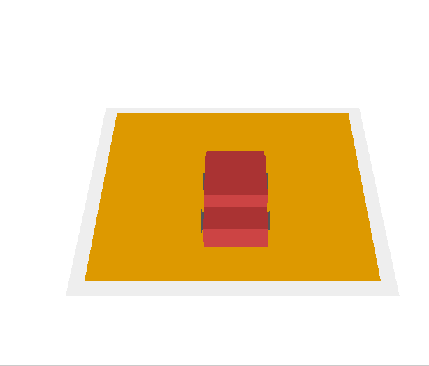
Polygon count: 20 (+3 for the ground).
Byte count: 6.59kb commented, 4.55kb minified, 1.69kb zipped.
Hours count: 2 (I only count the hours where I actively work with my pen or my code editor, not all the idle thinking in between :p)
DEMO
~~
Backseating the camera
Day 3: let's make the camera follow the car but not too rigidly:Instead of having a fixed view of the back side of the car, it's preferable to see it turn on itself a little when the player presses "left" or "right". The distance car-camera stays fixed though..
Let's do a bit of math:
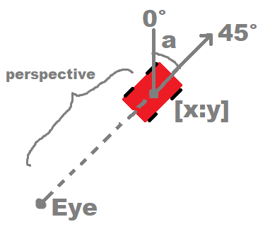
- At any given moment, the car is at a position [x:y], and rotated on the map with an angle a (here, 45° or Pi/4 radians)
- If the player presses "left" or "right", the angle a decreases or increases.
- If the player presses "up", the car moves 10px along its angle. To do that, we add (cos(a) * 10px) to x and we subtract (sin(a) * 10px) to y.
- If the player presses "down", the car moves back 10px. To do that, we subtract (cos(a) * 10px) to x and we add (sin(a) * 10px) to y.
- To keep seeing the car from behind, the camera must be centered on the new position [x:y], but with an angle equal to -a (-45°).
- The distance car-camera stays fixed "for free" because it is the perspective distance of our CSS3D scene.
- Finally, to make the camera follow the car less rigidly, add a little delay to its position and rotation changes. By chance, this can be done with a CSS transition: "#scene{transition:.25s linear}"
Repeat this 30 times per second and you have a mini racing game!
Just for the record: this is not easy at all for me. I'm getting more and more used to it, but it still took me a while to figure out which numbers and trigonometric functions I had to use at each step! (and I'm pretty sure the rest will be much harder)
Also, I noticed that Chrome goes crazy when we try to update elements with CSS transitions 30 times per second. So the transitions will be only be enabled on Firefox.
Acceleration
Let's take a moment to make the car accelerate when we press up and decelerate / goes back when we press down.To do this, we don't update the car's position directly at each frame with a fixed amount.
Instead, we increase or decrease a variable representing the car's speed, and add this speed to the car's position at each frame.
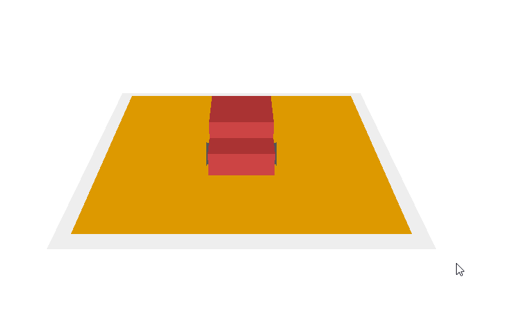
Polygon count: still 23.
Byte count: 6.73kb commented, 4.64kb minified, 1.72kb zipped.
Hours count: 3.
DEMO
~~
Where we're going, we need roads! (and barriers)
Day 4. In Trackmania, all the races and puzzles are made with blocks on a 3D grid.
The most basic block is a brown square laid on the snowy ground (as you can see in the previous GIF's).
When the players place a square block next to another square block (or any other road block that accepts it), they have the possibility to link them, which creates a continuous portion of road.
The two blocks can also stay independent, and have a gutter of snow between them.
To do this, I made my scene consist of a grid of 10in * 10in (where 1in = 96px).
If an independent square block is placed in a cell, it'll be 9in * 9in, centered, and surrounded by snow.
If two square blocks are linked, the game adds a 1in-wide link between them.
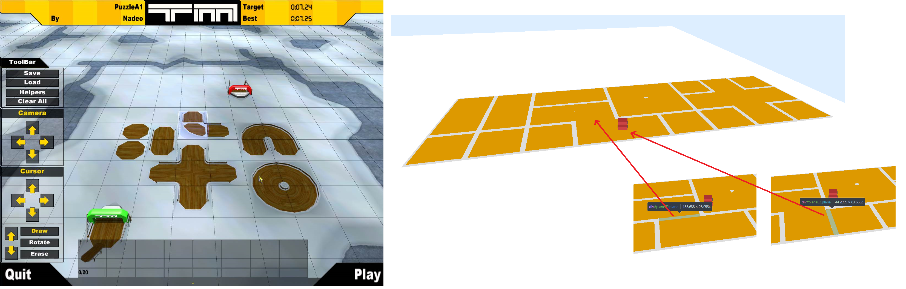
(my tests look like this. Yes, it's ugly, and doesn't have any curves. But we gotta start somewhere!)
As you can see, Trackmania also adds solid barriers on the sides of every road portion consisting of a least 2 linked square blocks.
I made an algorithm that checks the links of every block and automatically places little barriers (in the form of vertial, grey, CSS3D planes) where they are necessary.
I adapted it to extend their length in the direction of the link, in order to have a continuous barrier between two linked squares.

Tadaaa! Now the (real) challenge is to make the car collide with these barriers. It may take some time.
Polygon count: 20 for the car, 120 for these 27 road blocks, their links and their barriers.
Byte count: 11.0kb commented, 6.85kb minified, 2.28kb zipped. (wow, that's huge. I mean, for me.)
Hours count: 4.
DEMO
~~
Cleanup and golf #1
Day 5. Every few days, I re-read my (anarchic) code base and make it clean, commented and lightly golfed.
I started this 5th day by doing this, and it was quite good, because the minified code fell down to 6.02kb and the zipped code to 2.07kb (and 2.03kb with Advzip).
For the record, to benefit from Advzip extra compression, download Advcomp here, put advzip.exe in the same folder than your zip, and execute .\advzip.exe -z -4 -i 1000 .\min.zip in the command line.
(To squeeze a dozen extra bytes at the end of the project, replace 1000 by a bigger number, like 100000. It will take a few minutes to complete though!)
Collisions!
Let's start with very basic collision detection: considering that all the road blocks are square, and have 0 to 4 barriers on their sides, and considering that the car can only collide from its front side when going forward and from its back side when going backward.
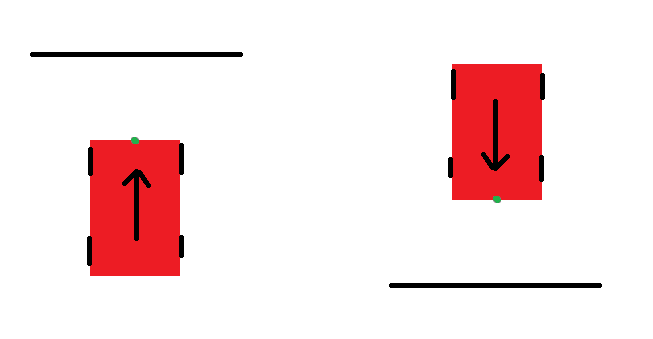
This can be done pretty easily, by computing on which cell the green point is placed (depending on the direction of the car - forward or backward), and if this point is further than a barrier, the car receives an inverted speed, which makes it bounce gently against the wall instead of passing through it. (In terms of code, the car behaves as if all the grey space after a barrier is an obstacle measuring 0.5in).
Two problems appeared quickly.
- The first one is that a back collision with an angle car-wall around 45 degrees will be detected too late, and the car will start clipping through before being stopped. The solution is to compute collisions on the four sides of the car and not only front and back. (I'll do that later though.)
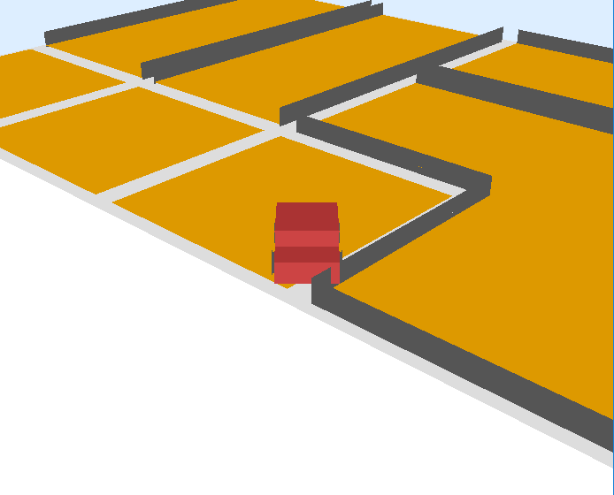
- The second one is that the car would randomly ignore certain barriers when it drives at full speed against it. But all the devs who do 2D or 3D collisions know this problem. If you have an obstacle in front of you, and your speed and alignment makes you stand before the obstacle at one frame and after the obstacle in the next frame, you'll pass through it. The solution (that I implemented) is to perform many little increments at each frame (5 in my case), and test the collisions at each increment. If one of the increments detects a collision, the car gets stopped at this frame, and this solution is effective 100% of the time. You just have to do enough increments to ensure that one increment at max speed is shorter than the size of any obstacle you can encounter on the map.
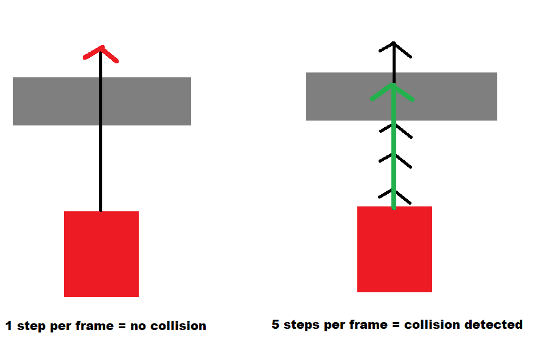
Live debugger
Of course, all this can't really be coded blindly, nor by watching hundreds of logs in the JS console, that's why I made a textarea that's always visible on screen and that can be updated 30 times per second. It's very handy!
For example, here, the logs indicate which side of the car is tested, if it's out-of-bounds, on which cell it is, and conclude by telling if the car is driving on the snow (if out of bounds), against a barrier (if there's a collision), or nothing (if it's on the road).
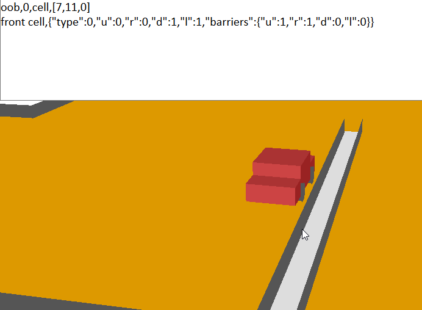
Screenshot saturday
It's time to polish a little (by making a little circuit, adding a start line and a cinematic introduction) and present it to the world:
#js13k day 5.
— xem 🔵 (@MaximeEuziere) August 17, 2019
Here are some news of my CSS3D racing game:
- Automatic barriers positioning
- Collisions with barriers are working!
- Many controls and camera adjustments
- Code cleaned up
- Polygons so far: 233.
- Zip size so far: 2.63kb!#screenshotsaturday pic.twitter.com/Q8e7A3rckb
Polygon count: 20 + 213.
Byte count: 17.6kb commented, 7.90kb minified, 2.63kb zipped.
Hours count: 6.
DEMO
Wait. 213 polygons seem huge for 31 road blocks with barriers... Upon inspection, I realized each barrier was drawn twice or more (once for each link shared with another road block).
Let's remove them altogether and replace them with black borders. Let's also merge every pair of orange and grey planes into a single orange plane with a grey border.
As a result, the polygon count is down to 87 in total!
Show your curves!
Day 6. My friend told me it was nice but too bit pointy... and I agree.
So let's do another algorithm that automatically rounds every road block with two consecutive road links. This is simply made with a 100% CSS border-radius applied to every corner that is opposite to links.
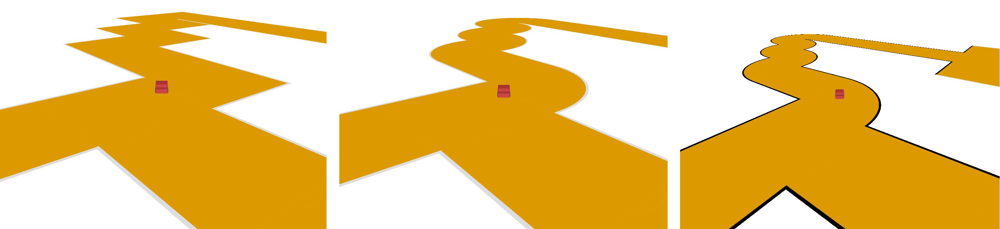
(Before vs. after vs. after with automatic barriers that follow the curves of the road!)
Collisions v2
Now that all blocks are not square anymore, computing collisions is a bit trickier. Actually, it's a lot harder: it took me all the week-end to figure out how to handle collisions on both sides of every barrier, reliably.
#js13k day 6. (3.17 kb)
— xem 🔵 (@MaximeEuziere) August 18, 2019
It took me most of the week-end, and it's not totally finished yet, but the road now has curves. And these curves have functioning collisions. (the black lines represent solid barriers).
I also reduced my polygon budget a lot: 233 => 87 pic.twitter.com/3XEObIjQmB
To put it simply, the game engine still needs to check straight barriers collisions like before, and allow to cross from a road block to another if they are linked, or between a road block without barrier and the outside (the snow), and vice-versa.
But once it has ensured all these conditions, it also needs to make all the rounded barriers' collisions work as intended.
To do that, each road block with a curve receives an equation (in the form of a JS function) that is able to tell if the car is on the road or outside.
The result of this equation can be used to determine if the car is trying to go from inside to outside (or the opposite) and block it.
"Block it" was the hardest part of the job: after many buggy attempts, I decided to respond to every collisions with a strong opposite force, which makes the car bounce on every wall, with an opposite speed, before being able to continue going forward in the right direction. (Trackmania kinda did that too, so it's fine! Hee hee).
The collision-testing function is 80 lines long, and is executed with the front side of the car as parameter when the car is going forward, and the back side if it's going backward.
So, about these equations. It turns out, I couldn't find them by myself, so I asked some help on Twitter and Slack.
Help?
— xem 🔵 (@MaximeEuziere) August 18, 2019
Is there an equation that can tell me if a point [x;y] is inside the black area? (the bottom-right side of a circle with a 50px radius, where x and y are between 0 and 50)#Math #Gamedev #js13k pic.twitter.com/Gjhf50joxt
A lot of people flew to help me with the same approach presented in various ways, but all of them implied to compare the distance from the car to the center of the quarter-circle and the radius. This distance can be computed with Pythagore or directly Math.hypot().
To optimize the CPU usage though, people advised me to avoid quare roots as much as I could, so I obeyed and compared the square of deltaX + the square of deltaY to the square of the radius. Perfect! 👌
To end this week, I finally separated my project in 8 different files, and added comments everywhere so my future self (and people on Github) will be able to understand what I have been doing!
Polygon count: 20 + 67.
Byte count: 20.0kb commented, 10.00kb minified, 3.17kb zipped.
Hours count: 9.
DEMO
Week 2
3D barriers
Day 7. I used this day to finish debugging the collision detection of last week-end, then I quickly tested to copy the barriers on multiple layers to make them look less flat. It consumed a lot of bytes and polygons, and wasn't looking as nice as I wanted, because of the lack of anti-aliasing when rendering things in CSS3D on Firefox. Moreover, it was super buggy (visually) on Webkit: all the rounded blocks refused to appear at all! So I discarded this test, and without it, Webkit's display is more or less OK.
#js13k day 7.
— xem 🔵 (@MaximeEuziere) August 19, 2019
I wanted to make the barriers look higher by copying them on two different layers, but I'm not sure it's worth it.
It costs many extra polygons, and the lack of anti-aliasing is kinda problematic... pic.twitter.com/9iN4PC36zb
Hours count: 11.
DEMO
TRACK EDITOR!
Fighting with CSS
Day 8. Time to start a big and very important part of the game, the 3D track editor!
Though, very soon, a problem of size appeared: I wanted to display a grid on top of my scene, and dezoom it enough to let the player see the track from above. But when I did that, everything disappeared. The reason was that the scale of my scene was too big for the browser to show at once in CSS3D (I already had this problem when I made LOSSST in 2017: the rooms had to stay very small to avoid being cut or appear glitchy).
Indeed, my grid was comprised of 20 x 20 cells and each cell had a size of 20 x 20 in. (in total: 38400 px x 38400 px).
So the first thing to do was to resize everything: the grid, the car, the road parts, and everything in the JS code that referred to them (camera, display, collision detection).
I also put the base size (100px instead of 20in) in a variable, so it can be adjusted later more easily. With this size, the grid measures 2000px x 2000px and browsers can happily show it!
By the way, I couldn't add 400 polygons in my scene to represent each cell of the grid, it would have made the game extremely slow. Instead, all the lines and columns of the grid are drawn with a repeated linear-gradient, in CSS.
#js13k day 8.
— xem 🔵 (@MaximeEuziere) August 20, 2019
I was tired of writing my roads in JSON...
So, It seems like I'm starting a circuit editor.
I think it'll take some days, and a lot of kilobytes, before I have something that looks nice and works! 😬
(but here are the first steps anyway) pic.twitter.com/X8D0RUqtZH
Inventory
As you can see in this screenshot, I also started working on the editor's UI, especially the inventory.
My goal is to make each cell of the inventory display one road block and which quantity of this block is remaining.
I could draw these blocks using SVG or PNG's, but to save bytes, I'll draw each inventory road part directly in CSS3D, by reusing the same model as the one used on the track, but rotated 45° and dezoomed to fit in about 20 x 20 px.
It'll require a good organization to make every block of the game, reusable on the track and in the inventory. But that's doable!
Byte count: 24.3kb commented (I don't try to minify/zip as long as the code contains logs everywhere)
Hours count: 13.
DEMO
Tools!
Day 9. Today I have a better idea of what I need to do and how. I'm not stuck with CSS3D limits anymore, so I can focus on the editor's features, namely: moving and rotating the grid, moving the "cursor" (the green square) along with the camera, and place road blocks using the cursor.
#js13k day 9.
— xem 🔵 (@MaximeEuziere) August 21, 2019
My project is a mess, there's code to clean everywhere, but hey! The track editor has a grid that can go up and down and rotate, and a cursor that moves on the grid, and we can start building!
(you can't make stuff like that cleanly anyway, can you?) pic.twitter.com/tXWOaxNOkx
Note that I reused most of Trackmania's keyboard shortcuts: arow keys move the cursor, space key draws a block, del key deletes a removable block. All the rest can be done by clicking on the left menu.
Speaking of keyboard shortcuts: I altered the JS keyboard handler a little to support both space, del and enter keys, and I added extra variables for space and arrow keys to handle them when they're pressed once, or when they're held down, because both cases are treated differently. The pressed key flags are reset after each frame, while the other keep being set until the player releases them. It looks like this:
var s = 0, u = 0, l = 0, d = 0, r = 0; // hold (space / up / left / down / right)
var S = 0, U = 0, L = 0, D = 0, R = 0; // press
var _ = 0, $ = 0; // press suppr key, enter key
onkeydown = onkeyup = z => top['lurdl*d*l_ur*u*s$***'[(z.which+3)%20]] = top['LURDL*D*L_UR*U*S$***'[(z.which+3)%20]] = z.type[5]Byte count: 26.0kb commented.
Hours count: 15.
DEMO
More blocks
Day 10. I added the possibility to select blocks in the inventory, rotate them and place them...
I also noticed that my game declares A LOT of global vars, and it's not finished yet!
LOSSST (2017) also had a ton of variables but it wasn't really a problem. The hardest part (for me) was the ton of different CSS variables that I had to rename to 1 char at the last minute. In Back on Track, there will be very few CSS compared to LOSSST. For example, up to now, I only wrote 19 CSS rules, using only 10 CSS classes and 8 ids, which is very few.
#js13k day 10.
— xem 🔵 (@MaximeEuziere) August 22, 2019
I already have 58 global vars.
The 1-char var names A-Z a-z, $ and _ are not enough to hold them all! 😓
Besides that, the editor now features 3 blocks that can be placed and rotated on the grid. (basic road, start & end flags). They're not hardcoded anymore! 🥳 pic.twitter.com/do5V79n5aL
Byte count: 28.6kb commented.
Hours count: 16.
DEMO
UI
Day 11: I started this day by a little enhancement to my editor's menu:
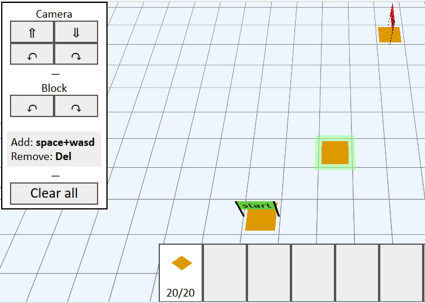
All the actions that can be done with the keyboard (move cursor, add and remove road blocks) are now none exclusively with the keyboard.
Moreover, the menu's buttons are now smaller and contain Unicode arrows to be a bit clearer!
It took some time though, because Unicode arrows are a big mess in terms of OS/browser support.
Hopefully, people on Slack helped me find a little subset of all the Unicode Arrows that can be displayed about everywhere, and I tweeted the result here.
←→↑↓↔↕↖↗↘↙⤡⤢↚↛↮⟵⟶⟷⇦⇨⇧⇩⬄⇳⬁⬀⬂⬃⬅➡⬆⬇⬉⬈⬊⬋⬌⬍⇠⇢⇡⇣⤌⤍⤎⤏⤑⤐↼⇀↽⇁↿↾⇃⇂⥊⥋⥌⥍⥎⥐⥑⥏⥒⥓⥖⥗⥔⥕⥘⥙⥚⥛⥞⥟⥜⥝⥠⥡⥢⥤⥣⥥⇋⇌⥦⥨⥧⥩⥪⥬⥫⥭⥮⥯⇈⇊⇇⇉⇆⇄⇅⇵⇐⇒⇑⇓⇔⇕⇖⇗⇘⇙⇍⇏⇎⟸⟹⟺⤂⤃⤄⤆⤇⬱⇶⇚⇛⤊⤋⭅⭆⟰⟱⇤⇥⤒↨⤝⤞⤟⤠↤↦↥↧⬶⤅⟻⟼↸⇱⇲⇜⇝⬳⟿↜↝↭⇷⇸⇹⇺⇻⇞⇟⇼↰↱↲↳⬐⬎⬑⬏↴↵↩↪⤣⤤⤥⤦↫↬⤙⤚⤛⤜⥼⥽⥾⥿🔁🔂🔃🔄⤶⤷⤴⤵➩➪➫➬➭➮➯➱⇪⇫⇬⇭⇮⇯➳➵➴➶➸➷➹➙➘➚➾⇰➛➜➔➝➞➟➠➧➨➺➻➼➽↶↷⤾⤿⤸⤺⤹⤻↺↻⟲⟳⥀⥁Note: these arrows can have very different look across different OS's, and about half of them will break completely the layout of monospace text, but besides that, they work!
I also saw that the arrow keys (making the cursor move) became all wrong when the grid (i.e. the whole scene) was rotated 90, 180 or 270°.
Indeed, if the scene is rotated 90°, top becomes left, left becomes bottom, etc.
So I improvised a little hack (I mean, a coding trick) to reassign the arrow keys according to the scene's angle. It worked on the first try!
// Adjust arrows based on grid angle
for(i = 0; i < gridrz/90; i++){
[U,R,D,L] = [R,D,L,U]
}Links, barriers, turns, equations (again)
But let's get back to serious business! Let's plug in the algorithms I made last week: the one that creates links between road blocks, the one that generates the barriers, the one that makes the curves, and the one that generates the equations for every curved block.
It took some hours to have it all behave well, but I did it!
#js13k day 11.
— xem 🔵 (@MaximeEuziere) August 23, 2019
Guys! Check this out!
It took me all day and required 4kb of code, but I made this thing work at last:
My track editor now computes curves and barriers instantly and automatically when I link two road blocks AND when I delete blocks too!🤩#screenshotsaturday-1 pic.twitter.com/4V7dGar652
It also took some time to implement the "hold space and move the cursor" mechanic to create a link between two existing blocks, or between an existing block and a new block created at the same time.
I have to admit I'm very happy of this achievement. For the first since this project started, I'm thinking that maybe, if there's no bad surprise, it could probably become something nice.
Fun fact: I made a random tweet explaining that I had lost 30 minutes for a stupid typo in a for loop. This tweet has had more likes and answers than any of my other #js13k tweets this year. I guess it's much more relatable than anything else I'm doing, eh? 🤷
Guess who lost 30 min because of this line?#js13k pic.twitter.com/qLVcXqWBxa
— xem 🔵 (@MaximeEuziere) August 23, 2019
And to finish this day very well (or not well at all), I almost lost all my progress of the last 24 hours because of my laptop acting super weird. Lesson learned: PUSH OFTEN, not just once per day!
Byte count: 32.1kb commented.
Hours count: 19.
DEMO
Completing the inventory
Day 12: Today, let's modelize new road parts! I played all the puzzles and races of the snow and desert environments and listed those:
- start flag (OK)
- end flag (OK)
- checkpoint flag
- flat road (OK)
- accelerator
- accelerator going down
- jumper
- short slope
- long slope rounded on the bottom, like ◞
- long slope rounded on the top, like ◜
- road that goes slanted on the side (ignoring it for now because ugh!)
The good news is that it's not a lot. I only have 8 new parts to make.
The less good news is that most of these blocks have special features and limitations that will require a lot of code to implement:
- all the blocks except the flat roads will have barriers on their front and their back until they're linked to another block.
- jumpers can only have one link on their back
- slopes and slopes-accelerator are special because they have one link on a certain height's plane and the other link on the upper plane.
- and on top of that, long slopes occupy two cells of the grid.
- snow, desert and castle environments have different ways to use barriers and prop/supports when the road is higher than the ground, and different ways to link slopes, but we'll see that another day!
But let's start by the 3D models. With CSS3Dframework, it's just a matter of 2 or 3 lines of code per block.
The checkpoint flag is similar to the start and end flags.
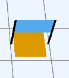
The accelerators (flat and slanted) are covered with yellow triangles. This can be done in many different ways (CSS, SVG, Unicode...), but I went with the one that seemed to require the least amount of code and resources: a repeating double linear-gradient in background.
I took an example on Lea Verou's CSS3 patterns gallery, simplified the code, and applied it to a road block. TADAAA.
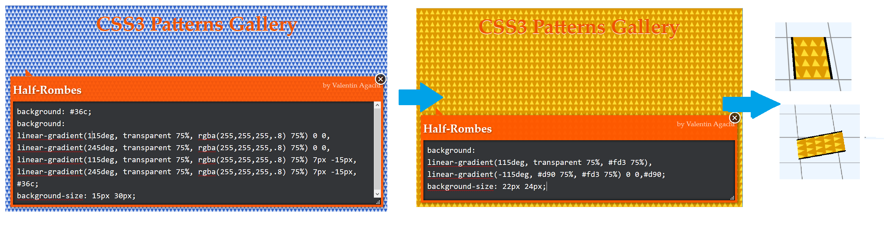
The jumper and slopes are simply made of one or two slanted planes.
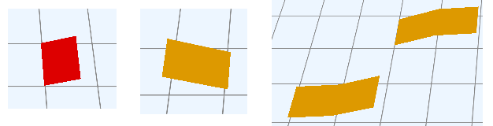
As I said on day 8, the parts shown in the inventory are the same "3D models" as the ones on the track, but displayed in a tiny space and with a 45° angle. Each slot of the inventory is a separate CSS3D container with a "500px" perspective, similarly to the scene. Here's how the scene and the inventory look with every block represented:
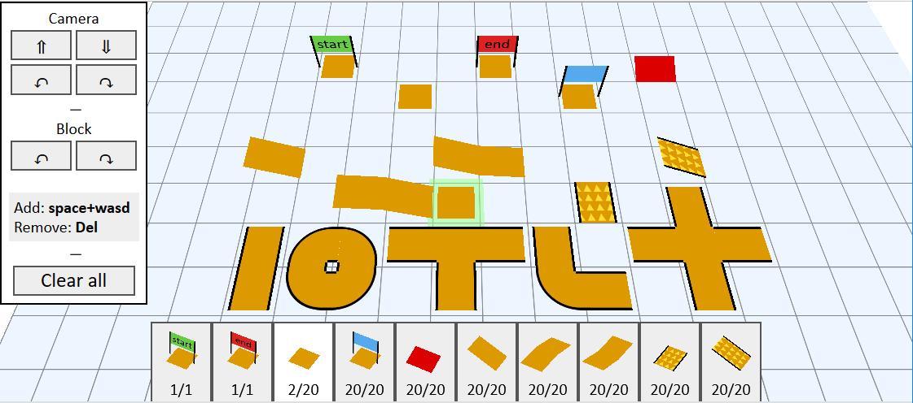
There's another special place where these road blocks are rendered: the editor's cursor. But it's less tricky here because it's rendered in the scene with all the other blocks. It's just that it can be replaced with any other block instantly when clicking an inventory item.
Oh, also: as I said here on Twitter, this whole scene only uses 61 polygons, which is very reasonable!
Byte count: 35.2kb commented.
Hours count: 21.
DEMO
Connect all the things!
Day 13: During the next days, my goal is to make all these new blocks connectable with each other. All the blocks except the basic road square don't need to be manually linked to their neighbours: when you place these blocks on the scene, if a compatible block is already present at one of their link points, and has the right orientation, the link will be automatic. And inversely, a new basic road block will automatically be linked to a neighbour non-basic road block if both are linkable together.
The most annoying part here is to organize the data. each cell of the 3D world must know a ton of information:
- if it's fixed or deletable
- what inventory item it refers to
- if it's free or occupied by a road block or a prop,
- if it can make links on its up/right/down/left side and at which coordinates,
- if it has a link on its up/right/down/left side,
- if it is flat or rounded on its up/right/down/left side,
- if it has a barrier on its up/right/down/left side,
- the coordinates of its surrogate block(s) in case of double block or slope
the coordinate of the main block in case of surrogate - its angle (0 90, 180 or 270),
- and its out-of-bounds equation.
// Example data for a basic road block (id #0) that is rounded on the bottom left and linked to other blocks on its up and right sides.
space[x][y][z] = {
fixed: 0,
free: 0,
id: 0,
inventoryid: 0,
linkable: { u: [x, y-1, z], r: [x+1, y, z], d: [x, y+1, z], l: [x-1, y, z]},
links: { u: [x, y-1, z], r: [x+1, y, z], d: 0, l: 0 },
flat: { u: 1, r: 1, d: 0, l: 0 },
barriers: { u: 0, r: 0, d: 1, l: 1 },
surrogates 0,
surrogate_of: 0,
slope: 0,
angle: 0,
equation: `Math.hypot(x-${x},y-${y},z-${z})>size*.8`
}Every time a block is added or removed in the scene, all these pieces of information must be computed or updated, for that block, and for all its neighbours. (plus the neighbours on the higher level if it's a slope).
I cleaned the code and the data to be able to do this well, and since it's saturday, let's take a moment to minimize and zip what we have so far:
#js13k day 13.
— xem 🔵 (@MaximeEuziere) August 25, 2019
I'm optimizing the organization of the editor's code and my data models.
It takes a while to figure out the best solution.
Anyway, the fun fact is that my minified JS is exactly 13kb!
And my zip is only 4.25kb, after all the things I've added these past few days🤯 pic.twitter.com/BlfRI7mTmU
Byte count: 33.9kb commented, 4.25kb zipped!
Hours count: 23.
DEMO
This zip size reminds me that I can actually write A LOT of code, even if it's dirty or copy pasted everywhere, and still, stay far below the zip limit. That's a relief!
Week 3
Pillars
Day 14: Today is the end of my summer holidays, so I'll have to work on my game before and after work, and of course on the weekends.
So to start gently, today I added pillars! There are pillars below every slope block, but there are also extra (or extended) pillars below every elevated block, i.e. the ones that are higher than the ground.
Each pair of pillars is a single plane, where the background is a vertical linear-gradient representing two black columns.
An elevated block will have a maximum of 2 extra polygons for its pillars, or 3 for the long blocks that cover two cells. So, all in all, the byte count and the polygon count didn't explode today, and that's a great news!
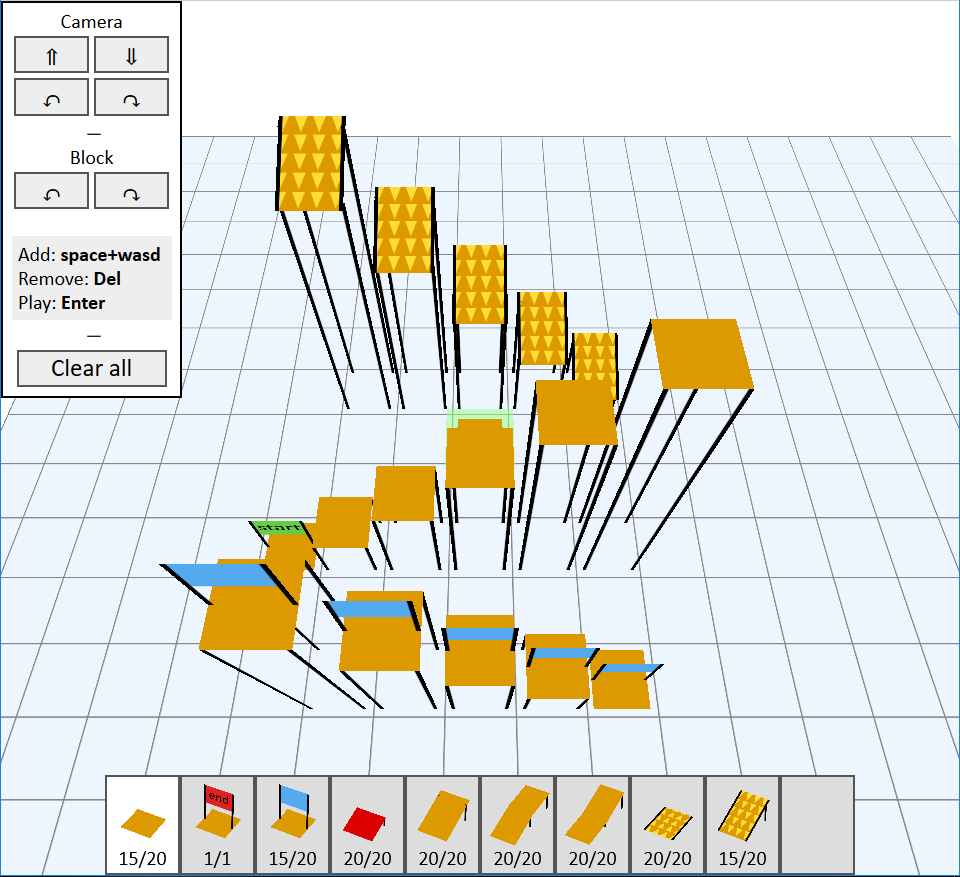
For example, this scene contains 75 polygons. It could be reduced a little with some extra optimizations, but the count is roughly correct.
After posting the obligatory WIP tweet, I received many enthusiastic messages of people and friends realizing that it'll be a real 3D game, and that it could be much more fun this way!
Byte count: 37.8kb commented.
Hours count: 23.
DEMO
Day 15: Let's do this (slightly annoying) links thing. And to begin, the "start", "end" and "checkpoint" blocks.
- They have barriers on the left and right sides, if they're placed on the ground.
- "Start" has a third barrier on the back, and "end" on the front.
- "Start" and "end" can only have one link with another block, on the front and on the back, respectively. "Checkpoint" can have both.
- If the links don't exist (yet), a barrier is added on the corresponding side(s).
- If there's a block on the cell placed in front (or back, or both) that is linkable at its corresponding side, the two blocks get linked.
- The out-of-bounds (OOB) equation is the same as the basic square block (inbounds if 20
And of course, all of this is complicated because all the blocks can be rotated. Depending on their angle, the "forward" side of a block will effectively be the one placed on its right, back or left side. It's a bit puzzling at first, especially to place barriers and rounded corners at the right places, but I'm getting used to it.#js13k day 15.
— xem 🔵 (@MaximeEuziere) August 27, 2019
I'm (finally) making all the editor's blocks connectable with each other!
- Road blocks can be linked in all four directions.
- Start block can only be linked forward.
- End block can only be linked backward.
- Checkpoint can be linked forward and backward.
TBC. pic.twitter.com/nJS0EM0iks
Byte count: 44.0kb commented!
Hours count: 25.
DEMO
Day 16: We're already at the half of the compo! Well, let's continue implementing links with the jumper (that can only have one link on its back) and the accelerator (front and back).
Their OOB equations are a bit different though. Accelerator has its Y value going from 0 to 100, and jumper from 50 to 100 (if their angle equals zero). Also, the jumper is not flat, so its equation will contain a Z value between 0 (on the edge) and 25px (on the middle)
All the other blocks are slopes, but we'll see that later!#js13k day 16.
— xem 🔵 (@MaximeEuziere) August 28, 2019
My editor now supports links with the (red) jumper and with the accelerator.
The commented source code is getting huge: 47kb!😨 (I abuse copy-paste a little tho...)
I'm fixing the texture of the accelerator and the next step is to make the slopes work!
TBC. pic.twitter.com/sINTs4jBku
Slopes are similar to checkpoint and accelerators in the sense that they can only have links on the front and back sides.
Of course, one thing really differs: the fact that they're linkable to a cell on the same level and a cell one level higher.
Also, they don't have barriers on the sides and on top of the slope, at least in the snow world. Some adjustments will be needed in the other worlds.
Anyway, the "linkable" object in the data model I showed on day 13 is going to come in handy here: concretely, each cell will know if it can have links in each of its four directions, but also at which coordinates the linked blocks must be placed.
For example, a slope going up at coordinates [x,y,z] will be linkable to the cell [x,y+1,z] on the back, and to the cell [x,y-1,z+1] on the front.
Oh! An extra check has to be made when placing a block: the cell directly above a slope can't be used for another block, to avoid this kind of collision: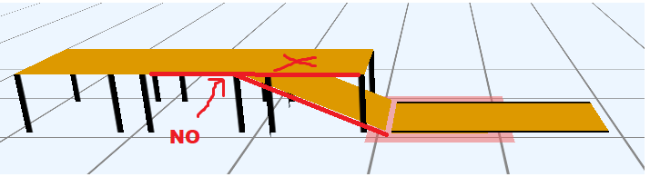
Inversely, a slope can't be placed on the cell directly under an existing block, for the same reason.
Finally, in the original game, the "slope up" double-block couldn't be placed on the ground, I'm not sure why.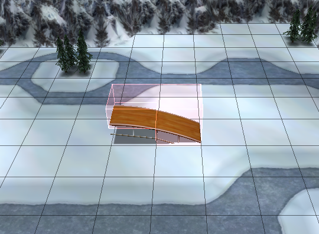
I thought this was because these blocks HAD to be connected to a descending block, but no: we can totally have two such blocks face to face: 🤷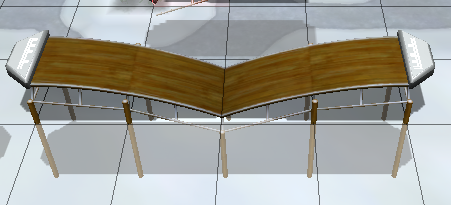
It definitely looks like a bug. and I won't copy it.
I started the implementation today, but see you tomorrow!PS: before going to bed, I'm realizing that this project is probably the most complex program I have written so far as a JS dev. The complexity of my own code is difficult to handle for me, especially with all those interconnectable pieces on a 3D grid, but it's still cool because it's the kind of challenge I wanted for this year's compo.
Unfortunately (or not), this complexity won't be really visible for the players or the judges, unless they take a look at my source code...
But hey, what's important is to make something fun! Invisible complexity is not a bad thing in a fun game.
I can't really complain anyway, because many JS devs (and other JS13K contestants) have already told me that it's super impressive, especially for a CSS3D game, so overall, my efforts are definitely not unnoticed. :D
Byte count: 47.1kb commented!
Hours count: 26.
DEMO
Day 17: After a lot of background work to set and handle the data correctly, I finally made everything connectable! (the scene shown below uses 164 polygons)
#js13k Day 17 update.
— xem 🔵 (@MaximeEuziere) August 29, 2019
YAY, I DID IT!
Everything is connectable, even the slopes!
It's rough, but all is in place. pic.twitter.com/p6MQnLXm5K
I was also mentioned in this super sweet tweet by @CarelessLabs:
In awe of all the #JS13k entries progress, so many talented devs, artists and musicains. Check out @js13kGames here are several of those taking part:@femtosonic@remvst@KilledByAPixel@dhmstark@EdJLynch@castpixel @Calada2 @MaximeEuziere @stas@64Mega@MallinsonBen pic.twitter.com/fxb580APVo
— Careless Coder (@CarelessLabs) August 29, 2019
Byte count: 59.6kb commented
Hours count: 28.
DEMO
Let's go pixel-perfect
Day 18: So all the blocks are linked, that's for sure. Though, all the links on the scene are still identical to the ones between basic road blocks, and it's not ideal. Let's enable the almighty CSS debug tool: *{border:1px solid red} !
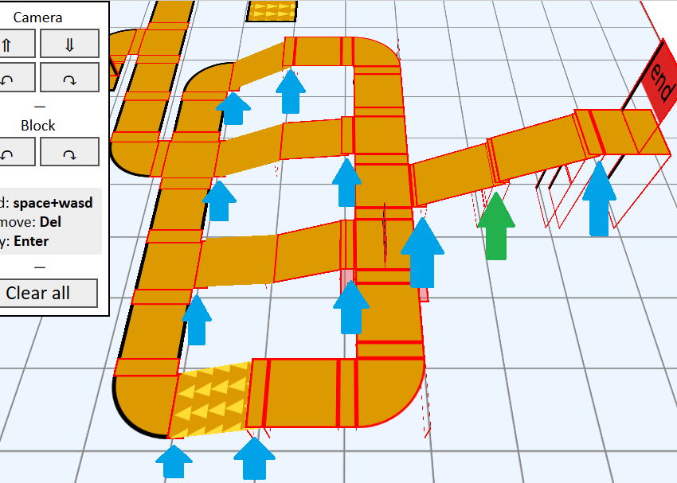
All the links represented by a blue arrow are between a slope and a flat road block. I need to detect this case and make them shorter, so that they don't go over or under the slope at all.
The green arrow (the second on the right) represents a link between two slopes. In that case, the link must not be drawn at all, because the slopes are long enough to touch each other.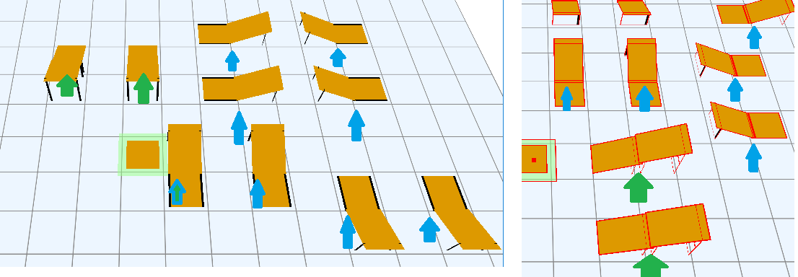
After many tries and adjustments, All the "semi-links" between a flat block and a slope are finally okay (blue arrows), and all the links between two slopes are not rendered, as intended (green arrows)!
Now that this is okay, let's zoom radically and make micro adjustments to have all the parts interconnect more smoothly (when I modelized them a few days ago, it was a bit rough and imprecise, but now I have all that I need to finalize them).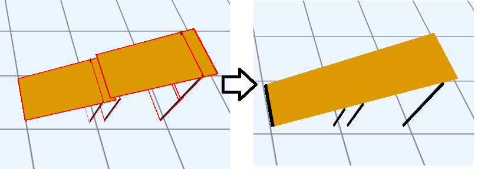
For example, the simple slopes had pillars that were a bit too high and went through the road, and their angle and length was a little wrong too, which is highlighted with the zoom and red borders. But why was the angle wrong in the first place? When I reduced the blocks' heights from 100 to 50px, I also reduced the angle from 45° to 45/2 = 22.5°. And that's where I was wrong.I have a (dumb) Maths question for #JS13k !
— xem 🔵 (@MaximeEuziere) August 30, 2019
Each of these two slopes are placed in a virtual cell that measures 100px (width) * 100px (height) * 50px (height), represented by this roughly drawn blue box.
Why is the slope angle equal to 26.5° and not 45/2=23.5° ? 🤔 pic.twitter.com/Qb8E5U7YRj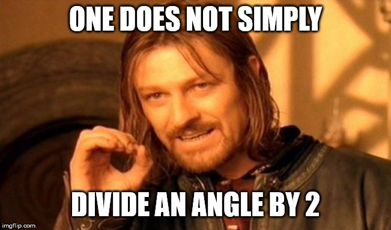
The answer came from @remvst, @randytayler and @mmastrac (thanks to them!)
The angle I wanted is actually: atan2(100,50) in radians, i.e. about 26.5°.
I made the same kind of adjustments for all slopes and all links. Here's a little close-up:
#js13k day 18.
— xem 🔵 (@MaximeEuziere) August 30, 2019
Yesterday, the blocks were indeed "linked" together, but with little gaps and overlaps everywhere. These little defects will be visible during the race.
So today, I made every connection absolutely seamless!
(you can see better with the red wireframe debugger) pic.twitter.com/OpEEqVfp1O
Byte count: 62.2kb commented
Hours count: 31.
DEMO
Fixes
Day 19: I spent the morning and a good part of the afternoon fixing all the little details in the editor that I kept for the end, (and cleaned up the code a little while doing it), such as:
- When we link two road blocks by pressing space + arrow, don't recompute all the links / barriers / turns at each frame, but only when the block is actually added in the scene (it seems obvious said like that, but until I found it, the editor became laggy every time "space" was pressed)
- When we create a slope, remember the coordinates of all its surrogates. (Note: for a slope, the cell directly above it is an invisible surrogate to avoid placing another block here. for a long slope, there are 3 surrogates: the second half of the slope, and the block above each half of the slope).
- When we want to create a slope, ensure that all its surrogates are on a free spot.
- When we delete a slope, also delete all its surrogates.
- When we press DEL while the cursor is on a surrogate, delete the main block to which the surrogate is attached.
- Automatically link a basic and a non-basic road blocks if they are neighbours (no need to press space + arrow to make these links).
- Make the flags shorter.
- When we delete a slope, also delete all the links it has with its neighbours.
I made another silly tweet that had more success than my usual WIP tweets:I just had a "why doesn't it work?! (...) oh, that's why. But then, how could it have worked before?!" moment.#js13k
— xem 🔵 (@MaximeEuziere) August 31, 2019
Decorations
Then, the evening, I modelized three decoration items that are also an important part of the game:
- Two kind of obstacles: the trees and the ice/rock blocks (made out of cubes)
- The ice planes, on which the car cannot brake or turn.The original game also features holes, but it would require too many polygons and computations to implement, especially for jointed holes, so I'll replace them with obstacles.
I showed the trees and rocks in this #screenshotsaturday video, along with a track being builded from start to end:
#js13k day 19
— xem 🔵 (@MaximeEuziere) August 31, 2019
Track editor is officially complete, with 10 different road parts, trees (always facing the camera) & mountains. Graphics are not final yet.
Project so far:
- 35 hours of code
- 2382 lines of code
- 78kb commented
- 35k minified
- 6.6k zipped!#screenshotsaturday pic.twitter.com/DVw4FZgFdCThe trees are made with emoji, and they're made of "billboards", i.e. planes that always face the camera. It's a feature I used in LOSSST in 2017, and implemented in CSS3Dframework.
To put it simply, every time the camera rotates with an angle "a", all the billboards rotate with an angle "-a" to keep facing the camera. The CSS transitions make both rotations (the scene and the trees) effortless.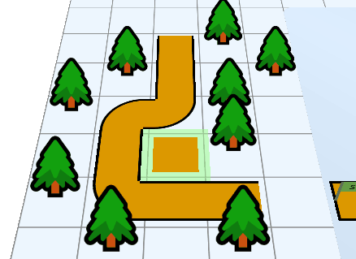
The ice is made with planes sharing the same CSS linear-gradient and background-position, so they can be superposed and seem like a single piece of ice.
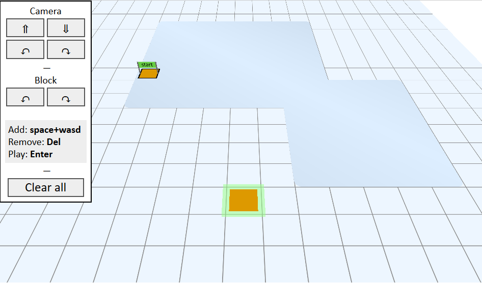
As I said in the tweet above, even with all these hours and lines of code, I only filled half of my zip, which is great (and terrifying)! The big amounts of copy-pastes with just one little change in the middle are certainly part of this very good compression ratio.
Thanks also to everyone on Slack and on Twitter (such as @______patton today) for their hype and support!
Byte count: 71.8kb commented, 34.4kb minified, 6.63kb advzipped.
Hours count: 35
DEMO
Export!
Day 20: The game will feature many built-in puzzles and races, and each of these tracks will be made with the editor.
So, while I'll make all these tracks, I'm adding a temporary export button in the menu, that will give me a big, condensed JSON object containing the position and angle of all the road blocks and the list of all the useful road links.
However, the inventories of each puzzle will be edited manually, as well as the ice planes, because building an UI dedicated to make them editable would take me more time than making them manually.
I'm also adding an import button allowing me to paste JSON and build a level from a hardcoded JSON. This will allow me to edit my levels and ensure that my loading code works normally.#js13k day 20.
— xem 🔵 (@MaximeEuziere) September 1, 2019
Since all the tracks built in the game will be made using the editor, I needed some admin tools to export and import levels correctly. Here they are!#screenshotsaturday + 1 pic.twitter.com/sMeuupHtluThis is not super visible in the captures above, but here's the format used for export and import:
- "roads" is an array containing arrays representing each block in this form: [x,y,z,id,angle]
- "roadlinks" is an array containing every link between two basic blocks in this form: [[x1,y1,z1][x2,y2,z2]]
Note: the links between a basic and a non-basic block or two non-basic blocks are automatic, so they're not included here.For example, for this little track containing 8 blocks and 8 links, but only 6 links between two basic blocks:
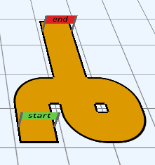
Here is the exported JSON (it could be less verbose, but it would take a lot of time and code to decode, and it's not a priority right now):{"roads":[[3,6,0,1,0],[3,5,0,0,0],[4,5,0,0,0],[5,5,0,0,0],[5,6,0,0,0],[4,6,0,0,0],[4,4,0,0,0],[4,3,0,2,0]],"roadlinksmin":[[[3,5,0],[4,5,0]],[[4,5,0],[5,5,0]],[[5,5,0],[5,6,0]],[[5,6,0],[4,6,0]],[[4,6,0],[4,5,0]],[[4,5,0],[4,4,0]]]}Of course, when I load this data, I have to reconstruct every automatic link not listed in the roadlinks array and draw everything on the scene.
(Note from the next day: This was only good in theory. Turns out, relinking automatically everything was finally more time and code consuming than keeping all the links in the JSON, so I finally reverted that.)
Byte count: 73.7kb commented
Hours count: 37
DEMO
Week 4
Music!
Day 21: Today, I asked my prodigious musician friend @d_nghia to reinterpret little samples of Trackmania Original, using my tool MiniOrchestra.
The original OST is available on this Youtube playlist.
To save time and space, I asked him to do only a few seconds of the menu, and a few dozen seconds of the snow race and the snow editor, that I will play in loop in the corresponding parts of my game.
While doing this, he found many bugs and limitations in MiniOrchestra, so I fixed them "in live" to help him work in the best possible conditions.
His most complex "race" composition looks like this in MiniOrchestra:#js13k day 21
— xem 🔵 (@MaximeEuziere) September 2, 2019
I'm working on the 32 built-in tracks of the game!
In the meantime, my teammate/friend/musician @d_nghia made me 3 incredible musical themes that will be played in the menus, the editor and the races!
(Here's how the race theme looks in https://t.co/GezceFapiD ! pic.twitter.com/W2kdNiGgO1
And the corresponding exported code looks like this:[{"octave":"220","duration":".19","decaystart":".18","decayduration":".005","interval":".2","volume":".3","wave":"sine","data":[[0,16],[1,16],[6,18],[3,18],[5,18],[8,20],[9,20],[11,21],[13,21],[14,21],[21,23],[22,23],[24,20],[25,20],[27,21],[29,21],[30,21],[23,23],[16,23],[17,23],[18,23],[19,23],[20,23],[32,16],[33,16],[35,18],[37,18],[38,18],[40,20],[41,20],[43,21],[45,21],[46,21],[48,23],[49,23],[50,23],[51,23],[52,23],[53,23],[54,23],[55,23],[56,20],[57,20],[59,21],[61,21],[62,21],[31,18],[63,18],[65,16],[64,16],[67,18],[69,18],[70,18],[72,20],[73,20],[75,21],[77,21],[78,21],[80,23],[81,23],[82,23],[83,23],[84,23],[85,23],[86,23],[87,23],[88,20],[89,20],[91,21],[93,21],[94,21],[95,18],[96,16],[97,16],[99,18],[101,18],[102,18],[104,20],[105,20],[107,21],[109,21],[110,21],[112,23],[113,23],[114,23],[115,23],[116,23],[117,23],[118,23],[119,23],[120,20],[121,20],[123,21],[125,21],[126,21],[127,18],[128,16],[129,16],[136,18],[137,18],[144,23],[145,23],[152,20],[153,20],[155,21],[157,21],[158,21],[160,16],[161,16],[168,18],[169,18],[176,23],[181,23],[190,21],[135,17],[167,17],[177,23],[180,23],[184,20],[185,20],[187,21],[189,21]]},{"octave":"440","duration":".19","decaystart":".18","decayduration":".005","interval":".2","volume":".1","wave":"sawtooth","data":[[0,16],[0,9],[1,9],[1,16],[3,18],[3,11],[5,18],[6,18],[5,11],[6,11],[8,20],[8,13],[9,13],[9,20],[11,21],[11,14],[13,21],[14,21],[13,14],[14,14],[16,23],[17,23],[19,23],[21,23],[22,23],[23,23],[20,23],[18,23],[24,20],[25,20],[24,13],[25,13],[27,21],[27,14],[29,21],[30,21],[29,14],[30,14],[32,9],[33,9],[32,16],[33,16],[35,11],[37,11],[38,11],[35,18],[37,18],[38,18],[40,20],[41,20],[40,13],[41,13],[43,14],[45,14],[46,14],[43,21],[45,21],[46,21],[48,23],[49,23],[51,23],[52,23],[53,23],[54,23],[55,23],[50,23],[56,20],[57,20],[56,13],[57,13],[59,21],[59,14],[61,14],[62,14],[61,21],[62,21],[128,16],[129,16],[128,9],[129,9],[136,18],[137,18],[136,11],[137,11],[144,23],[145,23],[153,20],[153,13],[158,14],[158,21],[160,9],[161,9],[160,16],[161,16],[168,11],[169,11],[168,18],[169,18],[176,23],[181,23],[16,16],[18,16],[19,16],[21,16],[22,16],[23,16],[20,16],[17,16],[48,16],[49,16],[50,16],[52,16],[53,16],[54,16],[55,16],[51,16],[145,16],[144,16],[176,16],[159,21],[159,14],[156,14],[156,21],[154,20],[154,13],[181,16],[185,20],[190,21],[185,13],[190,14],[177,16],[177,23],[186,13],[186,20],[188,21],[191,21],[191,14],[188,14],[180,16],[180,23]]},{"octave":"440","duration":".19","decaystart":".18","decayduration":".005","interval":".2","volume":".06","wave":"sawtooth","data":[[64,16],[65,16],[64,9],[65,9],[67,18],[69,18],[70,18],[67,11],[69,11],[70,11],[72,20],[73,20],[72,13],[73,13],[75,21],[75,14],[77,14],[78,14],[77,21],[78,21],[80,23],[81,23],[82,23],[83,23],[84,23],[85,23],[86,23],[87,23],[80,16],[82,16],[85,16],[86,16],[87,16],[84,16],[83,16],[81,16],[88,13],[89,13],[88,20],[89,20],[91,14],[93,14],[94,14],[91,21],[93,21],[94,21],[96,9],[96,16],[101,11],[101,18],[104,20],[104,13],[109,14],[109,21],[97,9],[97,16],[99,11],[102,11],[99,18],[102,18],[105,13],[105,20],[107,21],[107,14],[110,14],[110,21],[112,23],[113,23],[114,23],[115,23],[116,23],[117,23],[118,23],[119,23],[112,16],[113,16],[114,16],[115,16],[116,16],[117,16],[118,16],[119,16],[120,13],[121,13],[120,20],[121,20],[123,21],[125,21],[126,21],[123,14],[125,14],[126,14]]},{"octave":"440","duration":".19","decaystart":".18","decayduration":".005","interval":".2","volume":".22","wave":"square","data":[[64,18],[65,16],[66,13],[72,18],[73,16],[74,13],[80,18],[81,16],[82,13],[88,18],[89,16],[90,13],[91,16],[92,11],[93,10],[94,11],[95,13],[96,18],[97,16],[98,13],[104,18],[105,16],[106,13],[112,18],[113,16],[114,13],[120,18],[121,16],[122,13],[123,16],[124,11],[125,10],[126,11]]},{"octave":"440","duration":"1.5","decaystart":".5","decayduration":"1","interval":".2","volume":".22","wave":"square","data":[[67,16],[75,16],[83,16],[99,16],[107,16],[115,16],[127,16]]}]
The total size for the three tracks and the player is very reasonable: 6.05kb minified, and about 1.74kb zipped).And in the meantime, I asked on Twitter how to stop an Oscillator "O" attached to a GainNode "G" attached to an AudioContext "A" anytime. Turns out, the answer (found on StackOverflow) is to do A.close().
Built-in tracks!
But let's not stop there, the clock is ticking!
So I spent the evening (re)playing and screenshotting every race and puzzle track of the original game. 8 + 8 for the snow world, and 8 + 8 for the desert world. Unfortunately, the third world doesn't work on my PC so I won't do it for now.
I have noticed a few road parts that were not modelized yet, but I won't redo them all, only the two that are really necessary: the ascending accelerator, and (spoiler warning) the straight line with a hole in the middle.
I'll do them tomorrow.
Byte count: 80.2kb commented
Hours count: 39
DEMO
Day 22: After adding the two new blocks...
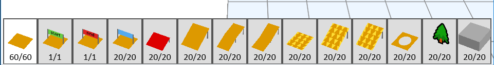
I started rebuilding the 32 tracks of the game with my editor, and adding inventories and ice planes manually where they were needed.
The tracks are not exact copies, but they're as close as possible to the originals.
While making these tracks, I found many little bugs in the editor (misplaced links, barriers, surrogates here and there), so it's a good thing I went through this soon enough to fix them!11 tracks added today, representing about 1.58kb zipped...
Byte count: 90.9kb commented
Hours count: 41
DEMO
Day 23: 12 new tracks added today... and more editor fixes.
I'm stopping there for now because they take a lot of room and time.
Tomorrow, I start the 3D racing implementation!On a personal note, I'm going through a lot of doubt right now.
I see all the other 3D entries being made, and mine looks very basic in comparison. What if people don't find it fun? What if it doesn't run well enough on everyone's desktop? or worse, what if I don't manage to ship it on time? I'm doing my best, but I'm still very unsure of the outcome.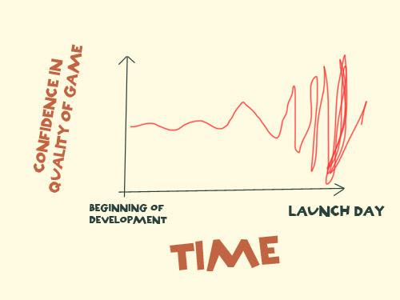
Byte count: 112kb commented
Hours count: 43
DEMO
Menu-ing!
Day 24: To fix the bad mood from yesterday, I created the title screen, the menu, and connected the menu buttons, the editor and the race to give me an idea of the final game's experience.
I also added the timer when the race is being played.
And it worked! My confidence is now much higher than 24 hours ago.#js13k day 14.
— xem 🔵 (@MaximeEuziere) September 5, 2019
Today I linked the title screen (not spoiled here), the menu (with 16 puzzles/32), the editor and the race screens like that.
I'm still working on enhancing the driving controls.
Here it's still very jerky, but you get the idea... 😁 pic.twitter.com/JlilVWBEoH
Byte count: 115kb commented (or 102kb after keeping only the 16 puzzles shown in the menu)
Hours count: 45
DEMO
DRIVING SIMULATION
Day 25: It's (more than) time to start this big part of the game: the driving simulation.
I'm very afraid to get lost in a plate of spaghetti code, so I will divide that in plenty of mini-achievements, like I did for the editor.
Fix the camera
1) At first (see "Day 3"), I thought CSS transitions were enough to create the angle delay between the car and the camera.
Then I realized they were broken on Webkit.
Even later, I realized that it used too much CPU on Firefox, so I disabled it.
Today, I replaced it with an extra "visual" angle, that is increased or decreased when we turn left or right, and returns to zero when we stop turning.
This angle is added to the camera's angle, but not to the car's angle, which allows us to see the sides of the car when we turn. It's not a lot, but it's much more pleasing like that.2) Something was annoying me since I introduced the height buttons in the editor. The camera lost its alignment with the cursor.
I can't ignore this problem anymore, because the camera will have to follow the car, at whatever height it is!
So I tried many rewrites to my CSS3D camera function (from CSS3D framework), and I finally understood what was wrong: the "Z" position was polluted with the "rx" angle, i.e. it didn't represent a vertical offset anymore but rather, a slanted vertical offset. So I introduced a new value called "el" (elevation), that moves the camera vertically, independently of its angle.
The new code looks like that:C.camera = o => { // (...) // Update scene's origin (X, Y, Z-el) scene.style.transformOrigin = `${camX}px ${camY}px ${camZ-el}px`; // Update camera position and angle (translate X,Y,Z, then rotate RX,RY,RZ, then elevation) scene.style.transform = `translateX(${-camX}$px)translateY(${-camY}px)translateZ(${-camZ}px)rotateX(${camRX}deg)rotateY(${camRY}deg)rotateZ(${camRZ}deg)translateZ(${-el}px)`; }img
Gravity
At any moment, the game engine must know if the car is in the air or on the ground (or the road), and move the car accordingly.
The car undergoes Earth-like gravity, so it will fall by default, and it will stop if it hits the ground (or the road).
If the car falls on a slope, it will need to rotate accordingly in the X and Y axis... (I'll try that tomorrow).#js13k day 25.
— xem 🔵 (@MaximeEuziere) September 6, 2019
Today I fixed all that was wrong with the camera, and started the speedometer, the fine tuning of the controls, the (3D) gravity, the slight rotation of the car in front of the camera, the new collision system...
After all that, the big challenge will be slopes! pic.twitter.com/VusoPmF5Rx
Change the car scale
Until now, the car collided pretty much everywhere because it was almost as large as the road. So I followed the example of the original game and remade the car much smaller, and placed the camera much closer to it.
I also made the wheels more visible from behind.
Anyway: at this scale, the road suddenly appears really big and interesting to drive through!
Also, to save time and space, at this scale, it's okay to consider the car as a single point, so, for now, I'll remove both front and back collision detectors. Everything will be computed according to the center of the car, so all my schemas and code from week 1 are no longer relevant. Nevermind...img
Byte count: still 102kb (many lines of code removed in the meantime)
Hours count: 47
DEMO
Collisions v3
Day 26: Today, let's create two different equations for every road block: one that says when the car touches the road when it falls on it from above, and another, very similar to the one we had earlier, saying if a certain point of the block is inbounds or not.
For example:
- a basic road block placed on the ground with no links will have a fall equation like "z = 0" and an inbounds equation "x > 0 && x < 100 && y > 0 && y < 100".
- A slope oriented to the north will have a fall equation like "z = 50 - y / 2" (the car's Z coordinate will be compared to this value).
- A rounded block will have an inbounds equation similar to the ones we saw on day 13, but inverted ("sqrt(dx,dy)<80" instead of "sqrt(dx,dy)>80").
On top of that, all the barriers must provoke a collision, just like before.
If the car is quitting the road, it will fall until it hits the ground (or another road block), and if it lands on the ground, it will be able to drive out-of-bounds, but slower (if it's in the snow), or without being able to turn left or right (if it's on the ice).Slopes
Slopes are very close to the collision detection (that's why I mentioned it in the previous paragraph), but one detail still needs to be solved: how to get up or down a slope with the car?
The answer is three-fold:
- Quick solution: as long as the car's state is "not in the air", the car moves forward or backwards as usual, and at each frame, its height is updated according to the "fall" equation of the slope.
- Moreover, the car should rotate along its X and Y axis to "follow" the slope, as I said yesterday, but I'll do that later if I have enough time, as it's not a vital part of the gameplay and I'm a bit late on my schedule. (NB: I already kinda did this in this js1k 2017 prototype!)
- Ultimately, I should also prevent the car from driving through the slope if it's under it...
(Note from the next day: I thought I'd skip this feature because it would have been too complex but it turns out it worked instantly when I simply checked that the car could only go on the slope if it was already higher than 5px under the slope).#js13k day 26.
— xem 🔵 (@MaximeEuziere) September 7, 2019
It's still very drafty, but I have gravity and slopes that start working almost normally. And at 60fps.
Program for tomorrow: a lot of debug, implement checkpoints, end flag and accelerators, and some kind of momentum (we need jumps!)#screenshotsaturday pic.twitter.com/w41yJXfOLf
Byte count: 106kb
Hours count: 50
DEMO
Day 27: I spent this sunday morning cleaning up, debugging and completing yesterday's progress with gravity, collisions and slopes;
- make the slopes work on any of their four rotations
- handle "long slopes" and "jumpers" the same way (only changing the angles and legths)
- prevent the car from moving/turning when it's in the air
- consider the car out-of-bounds if it's under a slope (and make it collide with the "under" side of the slope)
- ensure that the car follows the slope uphill/downhill if it collides on a side of the slope.
- etc.#js13k day 27.
— xem 🔵 (@MaximeEuziere) September 8, 2019
(polishing yesterday's features)
Slopes can now block the car when it arrives from below, and have a barrier that prevents the car from passing through its base if it's not attached to a flat road block... #smallvictory pic.twitter.com/7u1YY55iGV
And the afternoon:
Momentum
The car must have an extra boost when passing on an accelerator, and jump when it arrives quickly on top of a slope or a jumper. (that's an important part of the game and the puzzles).
The accelerator pushes the car forward if it's oriented like the yellow arrows, and backward otherwise.
The jumps are made by including the Z offset added to the car when it goes up a slope to its vertical speed, the one that was only used for the car's gravity until now.The whole thing took much more time than anticipated, that's why I worked on it until nearly midnight.
#js13k day 27.
— xem 🔵 (@MaximeEuziere) September 8, 2019
(new stuff)
Lost a lot of time and energy in trafic today...
But I managed to make accelerators and momentum (especially, jumps) work as I want!
And debugged all the rest...
Program for tomorrow: checkpoints, end flag, score screen, medals, ice sliding,... pic.twitter.com/kuPrxXsPZpLet's do a little build to check the zip size...
Byte count: 112kb commented, 13.1kb zipped (argh), 11.8kb advzipped (oof!)
Hours count: 54
DEMO
Week 5
Day 28: Good news! This monday morning, I checked the calendar and realized that we had actually 24 more hours than I thought until the deadline:
More exactly, if we consider august 13th "day 1" of the compo, then September 13th is technically "day 32", even if both day 1 and day 32 are only half-days.Collisions... the end?
This morning I fixed many errors (and removed a lot of bad code) with the accelerators, and the collisions in general (I made them work in all possible angles and with or without slopes, and I capped the car speed if it went on an accelerator for too many frames).
I also took a look at my minified code, it was funny to see all of it fit in a screen and have all the main parts easily recognizable!
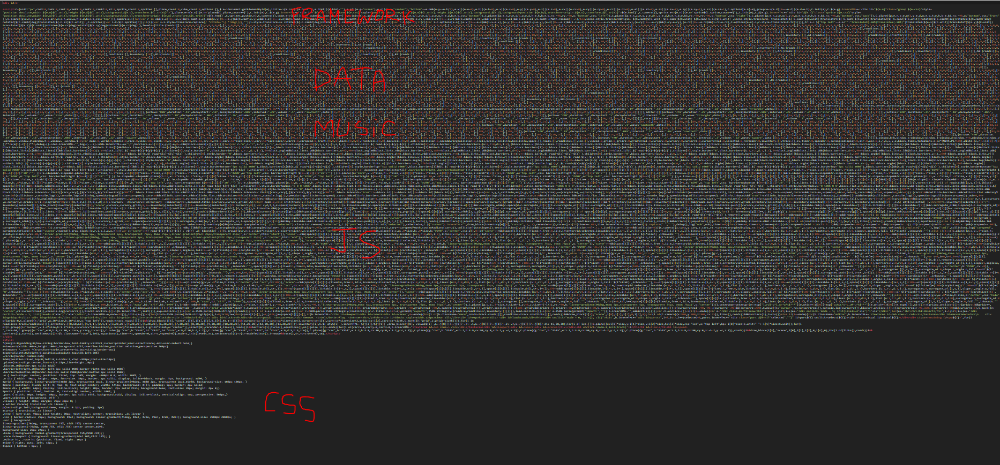
This evening (after work hours), I removed the hole blocks (RIP, at least for now), finished implementing the remaining "collisions", with the jumper, and the trees, and when the car falls on rock cubes or elevated curved roads. I also fixed the bugs that happened when we went past the bounds of the grid in the editor.
I also finally implemented the ice layers that make the out-of-bounds car unable to change direction! tweetDay 29: mar
Day 30: mer
Day 31: jeu ...
Conclusion
Xem